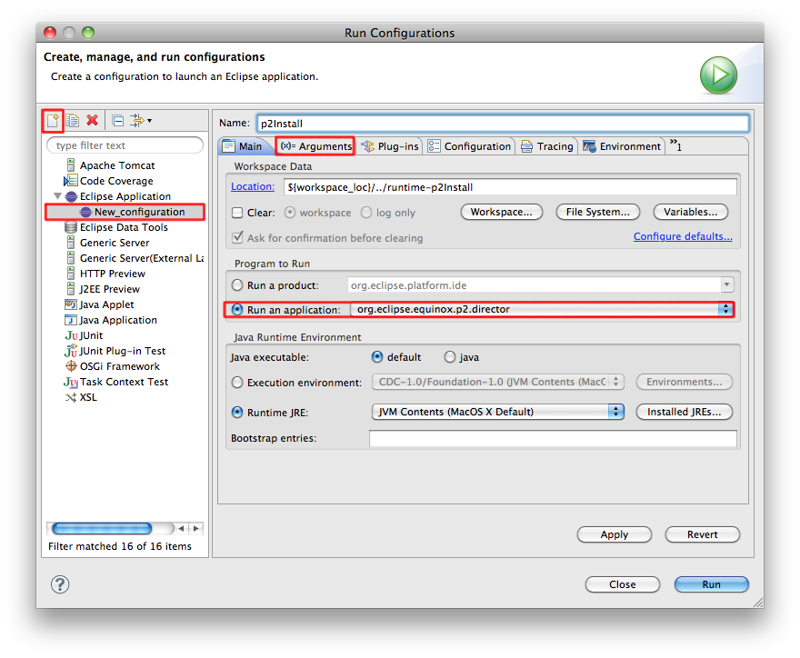
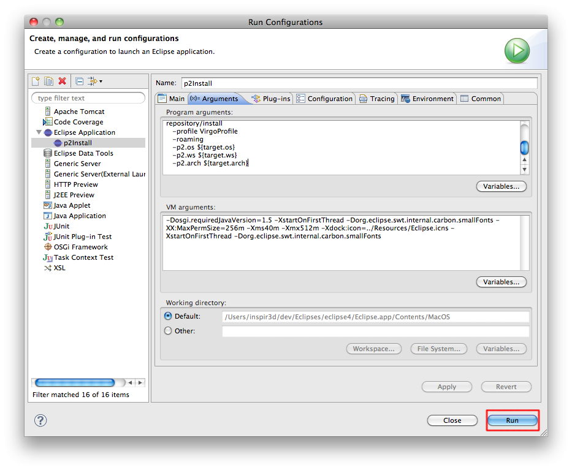
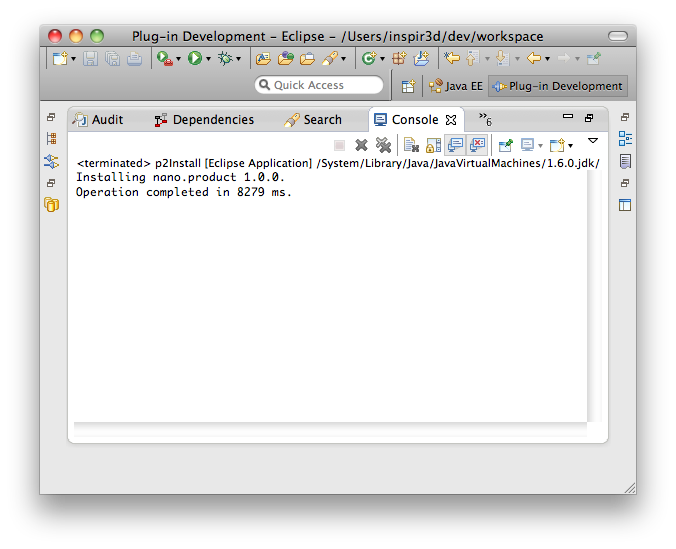

This section covers briefly using the p2 director for installing. A helpful page is the p2 director's documentation at help.eclipse.org. There you can find more information on the different supported arguments.
Here's how to use the GUI version of the director built-in Eclipse.
1. Go to the Run context menu and select Run Configurations
2. Create a new one and choose the director application as shown below, then switch to the Arguments tab
![[Important]](images/important.gif) | Important |
|---|---|
| In the image below the "Location:" text box's value is managed by your IDE, don't type anything in there. |

In the Program Arguments section append the director arguments. Here's an example I used:
-repository http://download.eclipse.org/virgo/updatesite/3.6.2.RELEASE
-installIU nano.product
-tag InitialState
-destination /Users/<youruser>/install/virgo
-profile VirgoProfile
-roaming
-p2.os ${target.os}
-p2.ws ${target.ws}
-p2.arch ${target.arch}
| Important |
|---|---|
The -repository argument accepts any valid p2 repository. The -destination argument accepts any valid absolute location. It defines the location where your Virgo installation will be provisioned. If the directory does not exist, it will be created by the director. |
These arguments produce a Virgo Nano installation. For the p2.* arguments use the same properties from the example above. Eclipse will substitute them later with real values.
The passed value for -installIU determines which Virgo product is going to be installed. Here's a list of all Virgo product install IUs:
nano.product - Virgo Nano
nano-full.product - Virgo Nano Full (VN + p2 + GW)
kernel.product - Virgo Kernel
tomcat-server.product - Virgo Server for Apache Tomcat
jetty-server.product - Virgo Jetty Server

3. Finally, run the created configuration. You should see the following output in Eclipse's Console
